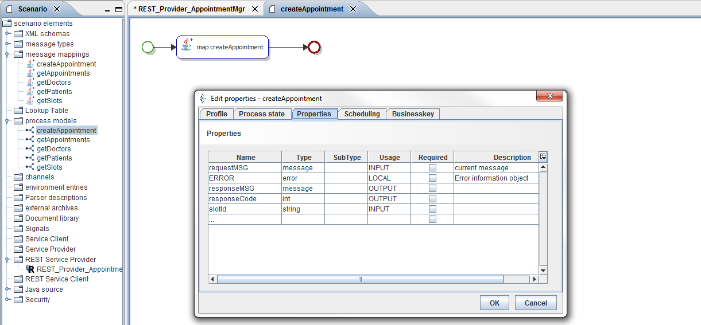
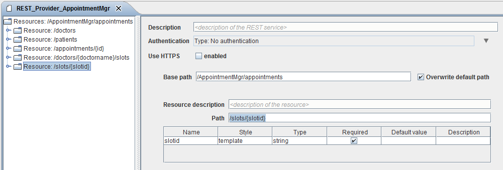

Book an appointment slots for a patient (Method POST)

Topic content
In this chapter we will create a Orchestra REST Provider implementation for booking appointments with a doctor. According to 3.3.6 Book an appointment slots for a patient (Method POST) we request the appointmentService by using the URL, but this time the appointmentService is implemented by Orchestra and for the Request we use the POSTMAN addon. Do following steps for the implementation.
http://localhost:8080/AppointmentMgr/appointments/slots/{slotid}
1.Copy your shell scenario from chapter 5.4.1 Preparation, or enhance your Scenario from the previous chapter.
2.Create a process model.
3.Add the mapping createAppointment to your process model.
4.Link all elements in your modell.
5.Open the Properties of your process model. Add string variable “slotId” with Usage INPUT, int variable “responseCode” with Usage OUTPUT. Add the message Variables requestMSG (INPUT) and responseMSG (OUTPUT).

Figure 102 – Book an appointment slot for a patient – Process Modell Properties
6.Configure the Input and the Output variable assignment of the Mapping.
Figure 103 – Book an appointment slots for a patient – Process Modell
7.Open the REST Service Provider REST_Provider_Appointment.
8.Add a resource to the root resource /AppointmentMgr/appointments.
9.Set to resource path /slots/{slotid}.

Figure 104 –Book an appointment slot for a patient – Resource /slots/{slotid}
10.Insert a Method POST to the resource /slots/{slotid}.
11.Set the Media type of the Response to application/xml, select the Message type appointment.
Figure 105 –Book an appointment slot for a patient – Resource /slots/{slotid} - Response Configuration
12.Set the Media type of the Request to application/xml, select the Message type appointmentRequest.
Figure 106 – Book an appointment slot for a patient – Resource /slots/{slotid} - Request Configuration
13.Change technical mapping of the POST Method.
14.Select the process model you created at register Technical mapping.
15.Set the template parameter slotid to the slotid variable of the process model and the MSG of the request (Body Content) to the requestMSG of the process at register Request mapping.
16.Use application/xml as ContentType, MSG get’s the responseMSG of the process model and the variable responseCode of the process to HTTPStatusCode at register Response Mapping.
Figure 107 - Book an appointment slot for a patient – Resource /slots/{slotid} - Technical mapping of Method POST
17.Start your Test engine and select register Service registry at the Testengine-Panel. Copy the endpoint for your REST Provider.
Figure 108 –Book an appointment slot for a patient – Resource /slots/{slotid} - Testengine Service registry.
18.Copy the link for the patients resource to your Postman application set the Method to POST.
19.For this Request we have to tell the server, for which patient we want to book the slot, so we have to set the Bodycontent
<appointmentRequest>
<patientName>mpatient</patientName>
</appointmentRequest>
20.We also have to inform the server which Content-Type we send in our Bodycontent, so we have to add the header Content-Type: application/xml.
21. Send the request If every thing is fine you’ll get following response (See screenshot).
Hint: If you don’t have installed Postman yet, have a look at chapter 3.2.3 Postman addon Google Chrome.
Figure 109 – Postman Trace: Book an appointment slot for a patient
Figure 110 – TCPMON Trace: Request appointments by using Query
If you compare your TCPMon trace with the trace from chapter 3.3.6 Book an appointment slots for a patient (Method POST) you can see that Orchestra produces an identical trace up to application-specific header informations.
Request |
Response |
POST /AppointmentMgr/appointments/slots/13 HTTP/1.1 Host: localhost:8088 Connection: keep-alive Content-Length: 84 Cache-Control: no-cache Origin: chrome-extension://fhbjgbiflinjbdggehcddcbncdddomop Content-Type: application/xml User-Agent: Mozilla/5.0 (Windows NT 6.1; WOW64) AppleWebKit/537.36 (KHTML, like Gecko) Chrome/50.0.2661.102 Safari/537.36 Postman-Token: 96c8b077-a053-76f0-a84d-31abd5873056 Accept: */* Accept-Encoding: gzip, deflate Accept-Language: de-DE,de;q=0.8,en-US;q=0.6,en;q=0.4
<appointmentRequest> <patientName>mpatient</patientName> </appointmentRequest> |
HTTP/1.1 201 Created Content-Type: application/xml Transfer-Encoding: chunked Server: Jetty(6.1.12rc1)
<?xml version="1.0" encoding="UTF-8"?> <appointment> <id>13</id> <date>20162204</date> <URL/> <doctor><id>1</id><name>rbauer</name></doctor> <patient><id>1</id><name>mpatient</name></patient> <slot date="20162204" doctorName="rbauer" end="930" id="13" start="900"/> </appointment> |
If we have a look in the servers Respons we get the HTTP Code 201 Created. So everything is fine an the appointment is commited by the server (response body content).
As addional test we can resent the request to the server. Now we compare the two responses. The server responses with HTTP Code 409 Conflict, because this slot is no longer available because we booked it with the request before.
Request |
Response |
POST /AppointmentMgr/appointments/slots/13 HTTP/1.1 Host: localhost:8088 Connection: keep-alive Content-Length: 84 Cache-Control: no-cache Origin: chrome-extension://fhbjgbiflinjbdggehcddcbncdddomop Content-Type: application/xml User-Agent: Mozilla/5.0 (Windows NT 6.1; WOW64) AppleWebKit/537.36 (KHTML, like Gecko) Chrome/50.0.2661.102 Safari/537.36 Postman-Token: 96c8b077-a053-76f0-a84d-31abd5873056 Accept: */* Accept-Encoding: gzip, deflate Accept-Language: de-DE,de;q=0.8,en-US;q=0.6,en;q=0.4
<appointmentRequest> <patientName>mpatient</patientName> </appointmentRequest> |
HTTP/1.1 409 Conflict Content-Type: application/xml Transfer-Encoding: chunked Server: Jetty(6.1.12rc1)
<?xml version="1.0" encoding="UTF-8"?><appointment><id>13</id><date>20162204</date><URL/><doctor><id>1</id><name>rbauer</name></doctor><patient><id>1</id><name>mpatient</name></patient><slot date="20162204" doctorName="rbauer" end="930" id="13" start="900"/></appointment> |